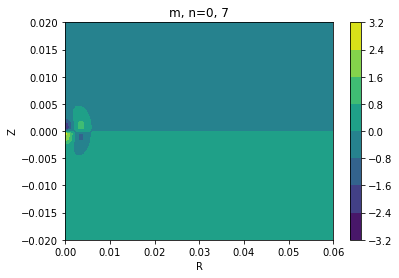

How to visualize the BFE bases used to make your coefficients
This is easy with pyEXP. Each of the three main basis types supported
by pyEXP, SphericalSL, Cylindrical, and FlatDisk provides
a getBasis member function that returns the basis functions in
their native geometry.
Let’s work a few simple examples to give you all you need to look at
your bases. A Jupyter notebook implementing these examples,
viewing_a_basis.ipynb, is available in the pyEXP examples repository in the
Tutorials/Basis directory.
A spherical basis
Start with a simple configuration file for spherical basis and instantiate the basis:
# Make the halo basis config
halo_config="""
---
id: sphereSL
parameters :
numr: 2000 # number of radial grid points
rmin: 0.0001 # smallest radial grid point
rmax: 1.95 # largest radial grid point
Lmax: 4 # maximum spherical harmonic degree
nmax: 10 # maximum radial order
rmapping: 0.0667 # radius for coordinate mapping
modelname: SLGridSph.model # model file name
...
"""
#
halo_basis = pyEXP.basis.Basis.factory(halo_config)
The getBasis member for each basis returns a vector of arrays for
the basis functions on the grid you have defined. For the spherical
or flat disk case, the basis functions are one-dimensional functions.
We provide a beginning and ending radius in logarithmic units along
with a grid size:
# Get the basis grid
#
lrmin = -3.0
lrmax = 0.5
rnum = 200
halo_grid = halo_basis.getBasis(lrmin, lrmax, rnum)
Now that we have the basis function grids, we can plot them. For example:
# Make a logarithmically spaced grid in radius
#
r = np.linspace(lrmin, lrmax, rnum)
r = np.power(10.0, r)
for l in range(3):
for n in range(5):
plt.semilogx(r, halo_grid[l][n], '-', label="n={}".format(n))
plt.xlabel('r')
plt.ylabel('potential')
plt.title('l={}'.format(l))
plt.legend()
plt.show()
The resulting images are:
{kind=link}
{kind=link}
{kind=link}
Cylindrical basis
Now let’s do the same for a cylindrical basis. The main difference here is that the basis functions are two-dimensional meriodinal planes.
As before let’s begin by configuring and instantiating our basis:
# Make the disk basis config
#
disk_config = """
---
id: cylinder
parameters:
acyl: 0.01 # exponential disk scale length
hcyl: 0.001 # exponential disk scale height
nmaxfid: 32 # maximum radial order for spherical basis
lmaxfid: 32 # maximum harmonic order for spherical basis
mmax: 6 # maximum azimuthal order of cylindrical basis
nmax: 8 # maximum radial order of cylindrical basis
ncylodd: 3 # vertically anti-symmetric basis functions
ncylnx: 256 # grid points in radial direction
ncylny: 128 # grid points in vertical direction
rnum: 200 # radial quadrature knots for Gram matrix
pnum: 0 # azimuthal quadrature knots for Gram matrix
tnum: 80 # latitudinal quadrature knots for Gram matrix
ashift: 0.5 # # basis shift for variance generation
vflag: 0 # verbose output flag
logr: false # # logarithmically spaced radial grid
density: false # generate density basis functions
eof_file: .eof.cache.run0 # EOF cache file name
...
"""
The ncylodd parameters sets the number of vertically anti-symmetric basis functions. The first nmax-ncylodd basis functions are symmetric and the last ncylodd are vertically anti-symmetric. You can adjust these parameters to provide the desired number of basis functions, anticipating the degree of vertical symmetry.
We provide a beginning and ending cylindrical radius and a beginning and ending vertical extent, this time in linear units (matching the logr parameter given in the config):
# Get the two-dimensional basis grid
#
Rmin = 0.0
Rmax = 0.1
Rnum = 100
Zmin = -0.03
Zmax = 0.03
Znum = 40
disk_grid = disk_basis.getBasis(Rmin, Rmax, Rnum, Zmin, Zmax, Znum)
We’ll use Pyplot’s contourf to visualize the meridional-plane basis functions:
R = np.linspace(Rmin, Rmax, Rnum)
Z = np.linspace(Zmin, Zmax, Znum)
#
xv, yv = np.meshgrid(R, Z)
#
for m in range(3):
for n in range(5):
# Tranpose for contourf
cx = plt.contourf(xv, yv, disk_grid[m][n].transpose())
plt.xlabel('R')
plt.ylabel('Z')
plt.title('m, n={}, {}'.format(m, n))
plt.colorbar(cx)
plt.show()
The first three of the resulting images are:
{kind=link}
{kind=link}
{kind=link}
The code above can be easily tweaked to produce only the vertically antisymmetric basis functions. Recall that the first nmax-ncylodd are symmetric and the last ncylodd are vertically anti-symmetric. In this case, nmax=8 and ncylodd=3, so indices 5, 6, and 7 are the vertically antisymmetric basis functions.
R = np.linspace(Rmin, Rmax, Rnum)
Z = np.linspace(Zmin, Zmax, Znum)
#
xv, yv = np.meshgrid(R, Z)
#
for m in range(3):
for n in range(5, 8):
# Tranpose for contourf
cx = plt.contourf(xv, yv, disk_grid[m][n].transpose())
plt.xlabel('R')
plt.ylabel('Z')
plt.title('m, n={}, {}'.format(m, n))
plt.colorbar(cx)
plt.show()
The first three anti-symmetric basis functions are:
{kind=link}
{kind=link}
{kind=link}
We can visualize the basis for FlatDisk using the same steps as
SphericalSL.